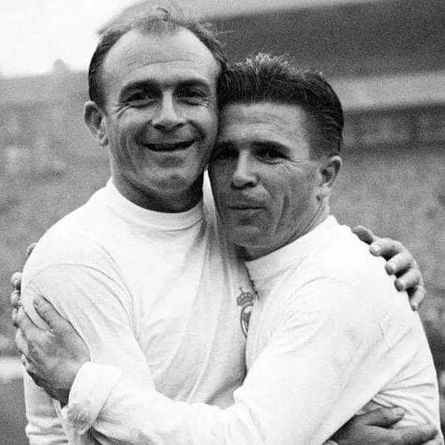

A csapat felszerelései


A labdarúgás Madridba az Institución Libre de Enseñanza egyetem tanárai és diákjai által jutott el, akik közül többen Nagy-Britanniában tanultak, így megismerkedhettek a játék alapjaival. Ők alapították meg 1897-ben az első madridi labdarúgóklubot, a Footbal Club Sky-t. Ez a klub 1900-ban kettévált, a New Foot-Ball de Madrid és a Club Español de Madrid léptek a Footbal Club Sky helyébe. Utóbbi klubból 1902. március 30-án jött létre a Madrid Football Club, a Real Madrid közvetlen elődje. Mindössze három évvel alapítása után a Madrid FC megnyerte első rangosabb serlegét, miután legyőzte az Athletic Bilbaót a spanyol kupa döntőjében. Ezután még háromszor egymás után sikerült a kupát elhódítaniuk. A csapat 1912-ig csak kisebb pályákon játszott, ekkor költöztek első nagyobb stadionjukba, a Campo de O'Donnell-be. 1920-ban, XIII. Alfonz király a Real (királyi) jelzőt adományozta a klubnak, így a hivatalos neve Real Madrid CF lett. 1929-ben, a spanyol labdarúgó-bajnokság első szezonjában a Real Madrid egészen a szezon utolsó mérkőzéséig az első helyen állt, ám mivel az utolsó fordulóban vereséget szenvedett az Athletic Bilbao vendégeként, a bajnoki címet végül az FC Barcelona nyerte, a Real pedig a második helyen végzett. A Real első bajnoki címét az 1931–32-es szezonban szerezte. A következő szezonban ismét az első helyen végeztek, az Athletic Bilbao után a második duplázó csapat lett az országban a Madrid.
 A klub elnöke 1945-ben a klub korábbi játékosa, majd edzője, valamint stadionjának későbbi névadója, Santiago Bernabéu Yeste lett. Elnöksége alatt felújították a Santiago Bernabéu stadiont és a klub korábbi edzőkomplexumát, a Ciudad Deportivát is. Az 50-es évek elején kialakította a klub mai arculatát, miszerint főleg külföldi világklasszis játékosokra építi csapatát. 1955-ben a L'Équipe újságírója, Gabriel Hanot ötletéből, Sebes Gusztáv segítségével, Bernabéu megalapította a BEK-et, amely ma Bajnokok Ligája néven ismert. Az újonnan alakult sorozatban a Real Madrid sokáig egyeduralkodó volt, ugyanis 1956 és 1960 között megnyerte zsinórban az első öt kiírást. Ezek közül az egyik legemlékezetesebb döntő az 1960-as volt, amikor a Hampden Parkban, több mint százezer néző előtt 7–3-ra győzték le az Eintracht Frankfurt együttesét, Puskás 4 és Di Stéfano 3 góljával. A csapat hatodik BEK-győzelmét 1966-ban aratta a Partizan Beograd 2–1-es legyőzésével, a csapat ekkor főleg spanyol játékosokra épült A 70-es években a Real Madrid összesen 5 bajnoki címet és 3 kupagyőzelmet szerzett. 1971-ben KEK-döntőt játszott a Chelsea ellen, amelyet újrajátszás után az angol klub nyert meg 2–1-re. 1978-ban, miközben zajlott a világbajnokság, elhunyt Santiago Bernabéu. Bernabéu emlékére, 1979-ben a Real Madrid megalapította a Santiago Bernabéu-trófeát, melyet minden nyáron, a szezon kezdete előtt játszott felkészülési mérkőzés győztese szerez meg.
A Real Madrid játékosai közül a legtöbb mérkőzésen Raúl lépett pályára, összesen 741 mérkőzést játszott le a királyi Gárdában 1994 és 2010 között. A kapusok között Iker Casillas a csúcstartó 518 fellépéssel. A Real Madrid legeredményesebb gólszerzője Cristiano Ronaldo 450 találattal,a második Raúl, aki 1994-től 2010-ig 323 alkalommal talált be az ellenfelek kapujába. Harmadik helyen, 307 találattal a klub tiszteletbeli elnöke, Alfredo Di Stéfano áll. A BL-ben is Cristiano Ronaldo vezeti az összetett góllövőlistát, 116 találattal. A portugál játékos a bajnokságban 350 gólt szerzett, ezzel ebben az összevetésben is az első helyen áll. A Real Madrid legmagasabb hivatalos nézőszáma 83 329, egy 2006-os kupamérkőzésen voltak ennyien a lelátókon. A stadion jelenleg 80 354 néző befogadására alkalmas. A 2007–2008-as szezonban az átlagnézőszám 76 234 volt, a legmagasabb az európai labdarúgó-bajnokságokban.
Az Estadio Chamartín, amelyben már 22 500 néző foglalhatott helyet volt az első hivatalos stadionja a csapatnak. A munkálatok 500 ezer pesetába kerültek. A stadionnak nem volt hivatalos neve, de az emberek elsősorban Chamartínként említették, és később is így szerepelt mindenhol. Az első mérkőzést ebben a stadionban 1923. május 17-én vívták, a barátságos meccsen a Newcastle volt az ellenfél. A Real itt ünnepelhette első bajnoki címét. Az 1943-ban megválasztott elnök, Santiago Bernabéu Yeste egy idő után úgy gondolta, ez már nem elég nagy a klub ambícióihoz, és új stadiont építtetett. A ma a Bernabéu nevét viselő stadion. 1947. december 14-én készült el. A Bernabéu stadion befogadóképessége sokszor változott, 1953-ban például akár 120 ezren is elfértek a stadionban. Ezután a stadiont a biztonsági okok miatt átépítették, és fokozatosan egyre kevesebb néző befogadására volt alkalmas. Az UEFA előírása, miszerint a BL-meccseket nem rendezhetik olyan stadionban, ahol állóhelyek is vannak, a stadiont 1999-ben ismét átalakították. Jelenlegi formáját 2003-ban nyerte el, az akkori, közel 5000 férőhelyes bővítés után a stadionban jelenleg 80 354 fő foglalhat helyet.
| Bajnokság | Kupa | Szuperkupa |
|---|---|---|
| 34 alkalommal | 19 alkalommal | 11 alkalommal |
| Bajnokok Ligája | UEFA-kupa | Világkupa | UEFA-szuperkupa |
|---|---|---|---|
| 13 alkalommal | 2 alkalommal | 3 alkalommal | 4 alkalommal |